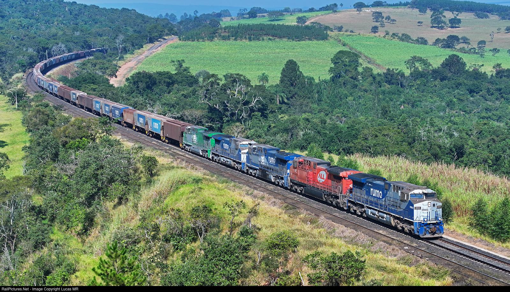
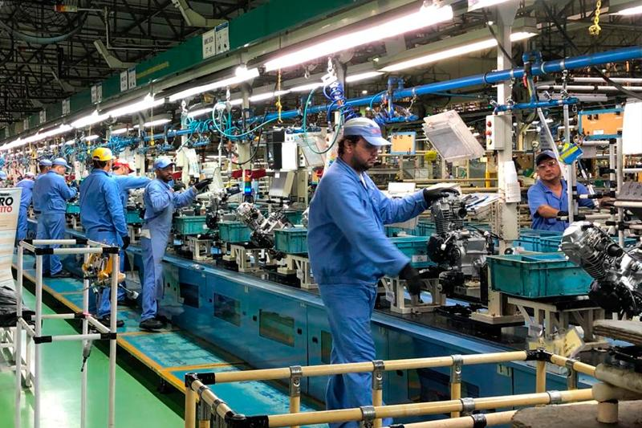

O Brasil precisa produzir, não apenas discutir.
Enquanto o país poderia avançar em infraestrutura, industrialização e desenvolvimento econômico, outros debates acabam ocupando grande parte da atenção política.
O que deveria ser prioridade?

Ferrovias
Investir em ferrovias para melhorar o transporte de cargas e reduzir custos.

Industrialização
Fortalecer a indústria nacional, gerar empregos e desenvolver tecnologia.
Impostos e corrupção
A população cobra menos desperdício, transparência e responsabilidade com o dinheiro público.
O brasileiro quer resultados!
Mais investimentos, mais oportunidades, menos desperdício e uma economia que realmente gere desenvolvimento.